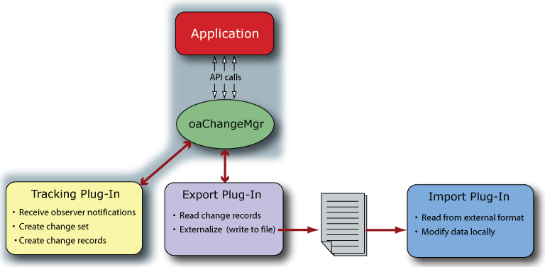

|
 |
 |
||||||
|
|
|
||||||
A CMS tracking plug-in is responsible for recording the changes made to a design. A tracking plug-in
The sections that follow provide a general guide for writing a tracking plug-in.
For an overview of the CMS system, refer to Change Management System (CMS) in the Programmers Guide.
An application captures information about design changes through CMS using the public oaChangeMgr class and a tracking plug-in. All interactions between CMS and the plug-in are managed by the oaChangeMgr singleton public class.

The tracked changes can be exported with an export plug-in, then imported by a different application with the appropriate import plug-in.
Refer to Tracking Changes in the Change Management System (CMS) document for an overview of the sequence of interactions between the end user, the application, the oaChangeMgr instance, and the tracking plug-in.
Before starting this project, you might want to read How to Write a Plug-In, which is a more generic document describing the general concept of plug-ins and how they work.
In order to create an CMS tracking plug-in, you need to:
OpenAccess provides infrastructure support for implementing a CMS plug-in. The functions in oaCommon.h provide basic plug-in support such as the ability to get the globally unique identifier (Guid) and manage the plug-in lifetime. Functions in oaCM.h provide support for all CMS objects.
Note that a sample tracking plug-in is provided at <install_dir>/oa/examples/cms/src/tracking.
To create a basic tracking plug-in:
const oa::oaString myTrackingPlugIn::plugInName("myTrackingPlugIn");
oaCommon::Factory<myTrackingPlugIn> myTrackingPlugIn::factory(myTrackingPlugIn::getPlugInName());
extern "C" long
getClassObject(const char *classID,
const Guid &interfaceID,
void **ptr);long
getClassObject(const char *classID,
const oaCommon::Guid &interfaceID,
void **ptr)
{
return oaCommon::FactoryBase::getClassObject(classID, interfaceID, ptr);
}class myCMTracking : public oaCommon::PlugInBase<oaPlugIn::ITracking> {
public:
myCMTracking();
virtual void init();
virtual void getProtocols(oa::oaCMProtocolArray &out) const;
virtual void setProtocol(const oa::oaCMProtocol &in);
virtual void beginTracking(const oa::oaString &name);
virtual void endTracking();
static oaCommon::IFactory *getFactory();
static const oaString &getPlugInName();
private:
oaCMProtocolArray m_protocols;
oaCMProtocol m_protocol;
oaChangeSet *m_cs;
static const oa::oaString plugInName;
static oaCommon::Factory<myCMTracking> factory;
};virtual bool validate()
<?xml version="1.0" encoding="utf-8" ?>Note: The registration file can be installed in $(OA_HOME)/data/plugins when the plug-in shared library is installed. Alternatively, the OA_PLUGIN_PATH environment variable can be used to reference a .plg file outside of $(OA_HOME)/data/plugins. Refer to Writing the Plug-In Registration File in How to Write a Plug-In for more information.
<plugIn lib="myTrackingPlugIn"/>
The following are sample implementations of the interface functions shown in Step 4 above.
This function initializes the plug-in and establishes the protocol. It could be implemented as:
void
myCMTracking::init()
{
oaCMAttrArray fixed;
oaCMAttrArray mod;
fixed.append(oaCMAttr("Format", "File"));
mod.append(oaCMAttr("Hierarchical"));
m_protocols.append(oaCMProtocol("myTracking", "myCMTracking", fixed, mod));
}
void
myCMTracking::getProtocols(oa::oaCMProtocolArray &out) const
{
out = m_protocols;
}
This function sets the protocols of this plug-in and could be implemented as:
void
myCMTracking::setProtocol(const oa::oaCMProtocol &in)
{
if (!m_protocols.validate(in)) {
throw oaError(oacCMInvalidPlugInProtocol);
}
m_protocol = in;
}
This function starts tracking database changes and enables the observers. It could be implemented as:
void
myCMTracking::beginTracking(const oa::oaString &name)
{
m_cs = new oaChangeSet(name);
m_cs->setActive(true);
}
This function ends the tracking of database changes disables the observers. It could be implemented as:
void
myCMTracking::endTracking()
{
if (m_cs) {
m_cs->setActive(false);
}
}
This function returns the factory interface for this plug-in and could be implemented as:
inline oaCommon::IFactory*
myCMTracking::getFactory()
{
return &factory;
}
This function returns the string name of the plug-in and could be implemented as:
inline const oa::oaString&
myCMTracking::getPlugInName()
{
return plugInName;
}
Return to Programmers Guide topics

Copyright © 2001-2010 Cadence Design Systems, Inc.
All rights reserved.